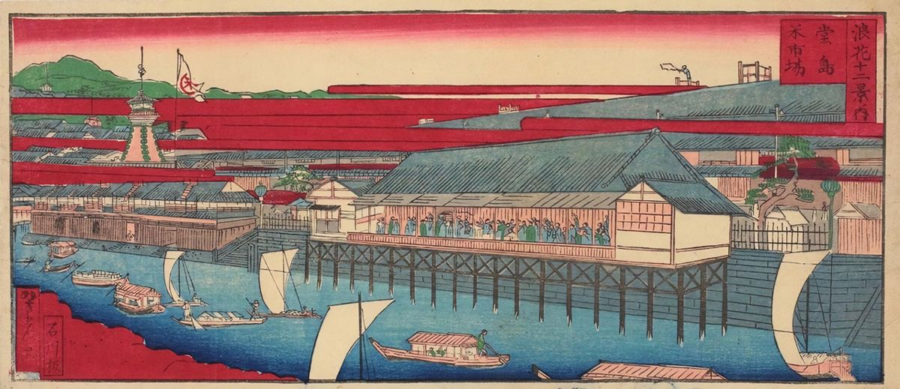
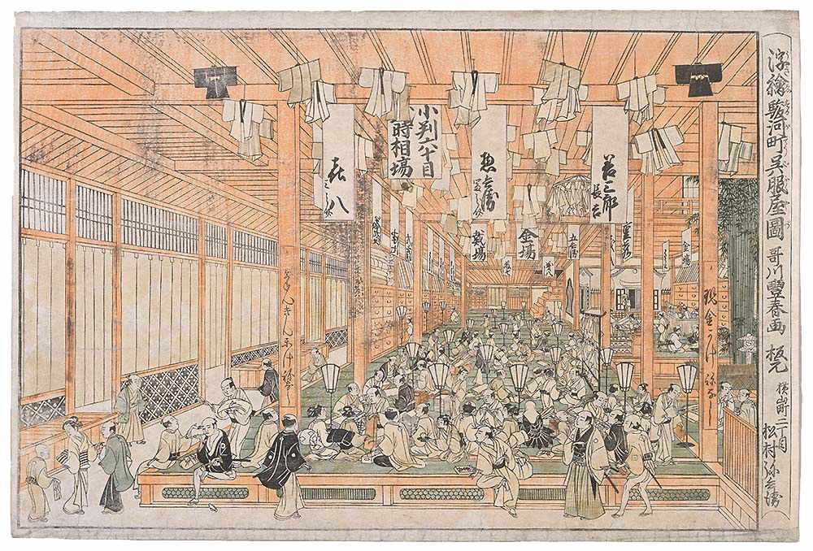

Un dojo per allenare l'occhio
Cos'è il Dojo
Il Dojo delle candele è una palestra per imparare a riconoscere le 66 figure classiche dei grafici a candele giapponesi: dalle più comuni, come hammer ed engulfing, alle più rare, come tri-star e concealing baby swallow.
Nelle arti marziali il dojo è il luogo dove si ripete un gesto finché diventa naturale. Qui il gesto è guardare un grafico e dare il nome giusto alla figura che hai davanti, in pochi secondi.
Come si allena
- 1Studia. Sempre aperto, fuori dalle modalità: ogni figura ha il suo disegno, il trend da cui nasce, una spiegazione breve, la sua gemella di segno opposto e la cintura che hai raggiunto.
- 2Figura → Nome e Nome → Figura. Giri da 10 domande su grafici generati ogni volta in modo diverso, così riconosci la forma e non il disegno a memoria.
- 3Studia e ripassa. Ogni giorno vedi prima le figure nuove (fino a 5) e poi ripassi quelle che tornano oggi. Una figura che sai torna dopo sempre più tempo; una che sbagli torna subito. Quante figure al massimo per sessione lo scegli tu nelle Impostazioni.
Il ripasso usa il metodo Leitner, ideato dal giornalista tedesco Sebastian Leitner negli anni Settanta per le schede di studio: ogni figura sta in una scatola, ogni risposta giusta la sposta nella scatola successiva, che si riapre dopo più tempo, e ogni errore la riporta all'inizio. Nel Dojo le scatole sono cinture, come nelle arti marziali: ogni figura ha la sua, dalla bianca alla nera.
Una risposta sbagliata riporta la figura alla cintura gialla, così torna già il giorno dopo. In Studia, passando con il mouse sopra la cintura di una figura (o toccandola dal telefono), vedi ogni quanto torna e quando la rivedrai. Le cinture delle figure sono una cosa diversa dai quattro livelli del Dojo, che salgono con il totale delle risposte giuste e aprono figure nuove.
I tuoi dati
Con un account, il Dojo salva i tuoi progressi (quali figure conosci, quando ripassarle, le risposte giuste e sbagliate) e le preferenze di allenamento. Li vedi solo tu, più gli amministratori del Dojo, che possono aiutarti a reimpostare la password o ad azzerare i progressi. Senza account, tutto resta solo nel tuo browser. I dettagli sono nella pagina Privacy e cookie.
Il Dojo serve a imparare a leggere i grafici, non dà consigli di investimento. Nessuna figura garantisce come si muoverà il prezzo: usale sempre insieme al contesto e a una gestione prudente del rischio.
Il Dojo è un progetto personale, gratuito e senza pubblicità. Se ti è utile puoi sostenerlo con una piccola donazione: aiuta a pagare dominio e servizi e ad aggiungere nuovi scenari.
Da dove arrivano le candele
Le candele giapponesi sono nate prima dei computer, prima della borsa come la conosciamo e perfino prima di Wall Street: nascono dal riso.
Il mercato del riso di Osaka
Nel Giappone del Settecento il riso era il vero denaro: con il riso si pagavano le tasse e gli stipendi dei samurai. Il centro di tutto era Dojima, a Osaka, dove i mercanti compravano e vendevano riso non ancora raccolto, con contratti che somigliano molto ai nostri future. Nel 1730 lo shogunato riconobbe ufficialmente il mercato di Dojima, che a quel punto era già uno dei più organizzati del mondo.

Munehisa Homma
Il nome che si lega alle candele è quello di Munehisa Homma (1724–1803), figlio di una ricca famiglia di mercanti di riso di Sakata. La leggenda racconta che a Osaka abbia fatto una fortuna enorme, perfino con una lunga serie di operazioni quasi senza errori, e che per questo lo shogunato lo abbia fatto samurai e consigliere. Su quante di queste storie siano vere gli storici sono prudenti. È più sicuro dire che a Homma si attribuisce un'idea nuova per l'epoca: il prezzo non dipende solo dal raccolto, ma anche dalle emozioni di chi compra e vende. Speranza, paura e avidità muovono il mercato quanto i numeri.

Le candele, nella forma che usiamo oggi, si sono definite dopo di lui, nell'Ottocento e nel Novecento, nelle mani di analisti giapponesi. Ma partono da quell'idea: ogni candela racconta una piccola battaglia fra compratori e venditori.
Come arrivano in Occidente
Per secoli rimasero un segreto dei mercati giapponesi. Alla fine degli anni Ottanta Steve Nison, analista americano, le scopre mentre lavora a Wall Street. Nel 1991 pubblica Japanese Candlestick Charting Techniques, il libro che le porta a trader e investitori di tutto il mondo. I nomi poetici (hammer, shooting star, evening star) vengono da lì: sono traduzioni inglesi, ormai standard, di nomi giapponesi.
Candele contro barre
In Europa e in America, per quasi tutto il Novecento, il grafico più usato è stato quello a barre (OHLC, dalle iniziali di open, high, low, close: apertura, massimo, minimo, chiusura). Le candele raccontano gli stessi quattro numeri, ma in un altro modo.
- Si legge a colpo d'occhio. Il corpo pieno e il colore dicono subito chi ha vinto la seduta, mentre nella barra bisogna confrontare due trattini minuscoli.
- Le forme diventano figure. Un corpo piccolo con un'ombra lunga, o un corpo che ne avvolge un altro, sono immagini che si imparano e si riconoscono: è su questo che si allena il Dojo.
- Le informazioni sono le stesse. Una barra e una candela contengono gli stessi quattro prezzi: cambia solo come li vedi. Non è che l'una sia più «giusta» dell'altra.
Questa è storia e divulgazione, non un consiglio di investimento: nessuna figura garantisce come si muoverà il prezzo.
Chi ha costruito il Dojo
- Idea e direzione
- Michele (gmanmik)
- Progetto e codice
- Scritto insieme a Claude, l'assistente di Anthropic
- Le figure
- La tradizione delle candele giapponesi nasce nel Settecento con Munehisa Homma, mercante di riso a Osaka, ed è arrivata in Occidente con i libri di Steve Nison. Nomi e descrizioni seguono la terminologia inglese ormai standard.
- Caratteri
- Shippori Mincho di FONTDASU e Zen Kaku Gothic New di Yoshimichi Ohira, entrambi con licenza SIL Open Font License, ospitati direttamente sul sito
- Immagini storiche
- Stampa del mercato del riso di Dojima di Yoshimitsu Sasaki (1880 circa) e interno del negozio Mitsui Echigoya di Utagawa Toyoharu (1768), entrambe di pubblico dominio via Wikimedia Commons. Fotografia della Borsa del riso di Dojima a Osaka (1914), dalla Prefettura di Osaka, in pubblico dominio (Wikimedia Commons)
- Bandiere dei paesi
- Twemoji (grafica CC-BY 4.0, codice MIT), ospitate sul sito
- Account e database
- Supabase, con la libreria supabase-js (licenza MIT)
- Hosting
- Cloudflare (Workers), con il codice del sito conservato su GitHub
Scrivici
- Amministrazione
- admin@dojodellecandele.com
Problemi con l'account, accesso bloccato, telefono della verifica in due passaggi perso, segnalazioni. - Protezione dei dati (DPO)
- dpo@dojodellecandele.com
Richieste sui tuoi dati personali: sapere quali dati abbiamo, correggerli, cancellarli o farteli inviare, revocare il consenso alla newsletter.
Le email automatiche arrivano da noreply@dojodellecandele.com, che non legge le risposte: per scriverci usa uno degli indirizzi qui sopra.